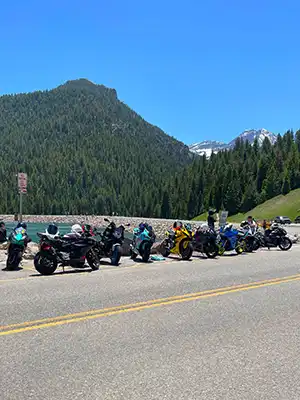

Types of Motorcycles

Sport
Sport motorcycles are designed for speed, fast acceleration, and sharp turning. They are lightweight and usually have powerful engines compared to other motorcycle types. Riders lean forward while riding, which helps with aerodynamics at higher speeds. Sport bikes are popular with riders who enjoy performance and track-style riding, but they can feel uncomfortable on long trips because of the aggressive seating position.
Cruiser
Cruiser motorcycles are built for comfort and relaxed riding. They usually have lower seats, wide handlebars, and a riding position where the rider’s feet are stretched forward. Cruisers are often heavier than sport bikes, but they are easier to ride at slower speeds. Many new riders like cruisers because they feel stable and comfortable on city streets and highways.
Adventure
Adventure motorcycles, often called ADV bikes, are designed for both paved roads and rough terrain. These motorcycles are taller than most street bikes and usually have large fuel tanks for long trips. Riders use adventure bikes for traveling, camping, and exploring because they can handle highways, dirt roads, and changing weather conditions.
Naked
Naked motorcycles are similar to sport bikes but are built with a more upright and comfortable seating position. They are called “naked” because they have less plastic bodywork covering the engine. Many riders choose naked bikes because they are easier to control, practical for daily riding, and still provide strong performance without feeling as extreme as a full sport bike.
Touring
Touring motorcycles are made for long-distance travel and rider comfort. They often include large seats, windshields, storage compartments, and advanced technology features. Touring bikes are heavier and larger than most motorcycles, but they provide a smooth ride on highways. Riders commonly use them for road trips because they are comfortable for many hours of riding.
Basic Motorcycle Terminology
- Aerodynamics
- Aerodynamics refers to how air moves around a motorcycle while riding. Better aerodynamics can improve speed, stability, and rider comfort.
- Torque
- Torque is the twisting force produced by the motorcycle’s engine. Higher torque helps motorcycles accelerate more quickly.
- Horsepower (HP)
- Horsepower measures how much power a motorcycle engine produces. Motorcycles with higher horsepower are usually faster and more powerful.
- CC
- CC stands for cubic centimeters and refers to the size of a motorcycle engine. Larger engines usually produce more power than smaller engines.
- Parallel Twin
- A parallel twin is a type of motorcycle engine with two cylinders placed side by side. This engine style is common on beginner motorcycles because it provides smooth and predictable power.
- Fairings
- Fairings are plastic body panels placed around parts of the motorcycle. They improve aerodynamics and help protect riders from wind.
- Seat Height
- Seat height is the distance from the ground to the motorcycle seat. Lower seat heights are often easier for beginner riders.
- Wind Protection
- Wind protection refers to parts like windshields and fairings that help block wind while riding at higher speeds.
- Handling
- Handling describes how easily a motorcycle turns, balances, and responds to rider movement.
Contact Us:
Utah Valley University800 West University Parkway,
Orem, UT 84058
Call us at 800-555-1234 for more information.